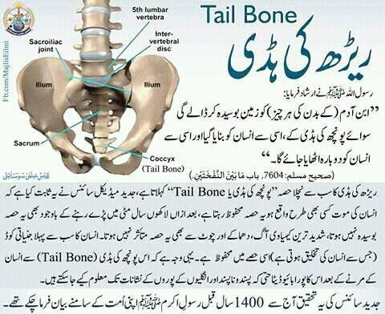

")
پیغمبر نے فرمایا:
تمام بدن کو آدمی کے زمین کھا جاتی ہے مگر پونچھکی ہڈی کو۔ انسان اسی سے پیدا ہوا اور قیامت کے دن بھی اسی سے دوبارہ پیدا کیا جائے گا۔ (صحیح بخاری کتاب التفسیر اور موطا، کتاب الجنائز)
آج کے جدید مسلمان کہہ رہے ہیں کہ یہ بات بتانا پیغمبر کا معجزہ ہے۔

سائنسی اعتبار سے یہ دعویٰ درست نہیں ہے:
۰ ماضی میں یہ ایک عام انسانی مشاہدہ تھا کہ بقیہ ہڈیاں جب گل چکی ہوتی ہیں تب بھی اکثر پونچھ کی ہڈی باقی ہوتی تھی۔
۰ بہرحال یہ دعویٰ غلط ہے کہ پونچھ کی ہڈی گلتی سڑتی ہی نہیں۔ درست یہ ہے کہ پونچھ کی ہڈی مضبوط ہوتی ہے اور بقیہ ہڈیوں کی بہ نسبت دیر سے گلتی سڑتی ہے، لیکن گلتی سڑتی ضرور سے ہے۔
۰ انسانی ڈھانچے میں سب سے دیر سے گلنے سڑنے والی چیز انسانی دانت ہیں جو سب سے دیر تک باقی رہتے ہیں۔
۰ ہزاروں انسانی ڈھانچے برآمد ہوئے ہیں جہاں چند بقیہ ہڈیاں اور دانت تو موجود تھے، لیکن پونچھ کی ہڈی غائب ہو چکی تھی۔
۰ نیز ان ہزاروں پرانے انسانی ڈھانچوں میں کوئی بھی 90 فٹ لمبے انسانی کی پونچھ کی ہڈی نہیں مل سکی ہے (جیسا کہ بخاری کی دوسری روایت میں پیغمبر کا یہ دعویٰ موجود ہے)۔
۰ اور انسان پہلی مرتبہ بھی اس پونچھ کہ ہڈی سے پیدا نہیں ہوا تھا، بلکہ وہ باپ کے سپرم اور ماں کے انڈے کے ملاپ سے پیدا ہوا تھا۔ اس کی پیدائش میں دور دور تک اس پونچھ کی ہڈی کا کوئی عمل دخل نہیں۔
۰ اور جو ڈی این اے پونچھ کی ہڈی میں پایا ہے، وہی ڈی این اے دوسری ہڈیوں میں بھی پایا جاتا ہے۔ چنانچہ جنیاتی کوڈ کے حوالے سے بھی پونچھ کی ہڈی یا دوسری ہڈیوں میں کوئی فرق نہیں ہے۔
۰ اگر سائنس نے کبھی مزید ترقی کی، اور ڈی این اے سے انسانی کلوننگ بھی ممکن ہو پائی، تو پھر اس حوالے سے کوئی فرق نہیں کہ وہ ڈی این اے پونچھ کی ہڈی سے آئے یا پھر دوسری کسی ہڈی سے۔